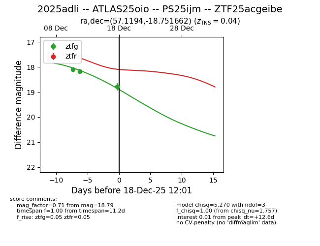
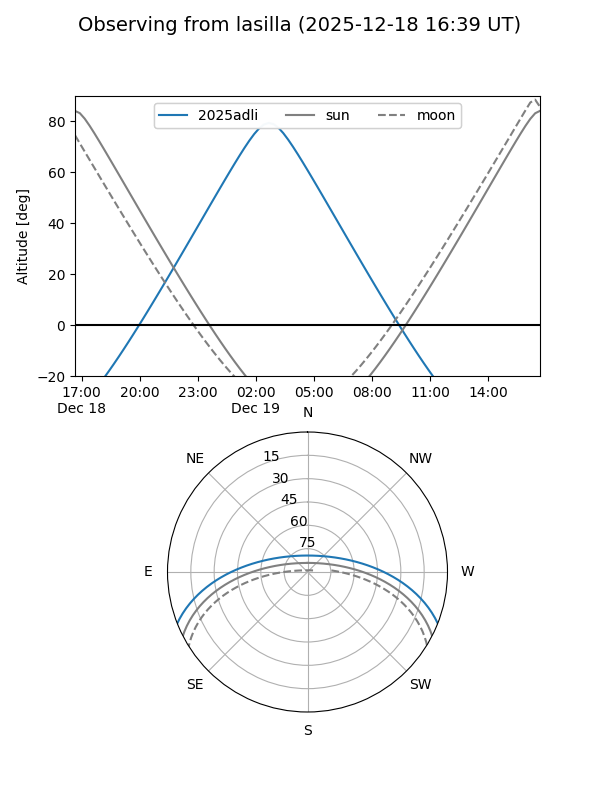
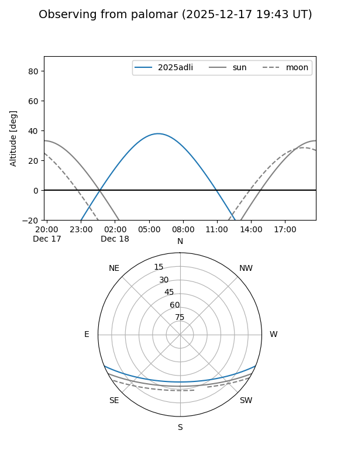
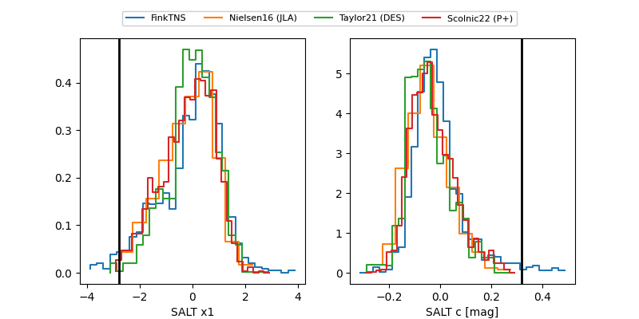

2025adli
Target 2025adli at 2025-12-18 12:02
Aliases and brokers:
FINK: fink-portal.org/ZTF25acgeibe
Lasair: lasair-ztf.lsst.ac.uk/objects/ZTF25acgeibe
ALeRCE: alerce.online/object/ZTF25acgeibe
TNS: wis-tns.org/object/2025adli
YSE: ziggy.ucolick.org/yse/transient_detail/2025adli
alt names
ZTF25acgeibe (ztf,fink_ztf)
2025adli (tns,yse)
PS25ijm (panstarrs)
ATLAS25oio (atlas)
Coordinates:
equatorial (ra, dec) = 57.1194,-18.75166
equatorial (HMS+DMS) = 03:48:28.66,-18:45:05.98
galactic (l, b) = (210.9273,-48.60285)
Photometry
last ztfg=18.79, ztfr=17.59
4 ztfg, 2 ztfr detections
Lightcurve

Visibility


Additional plots
